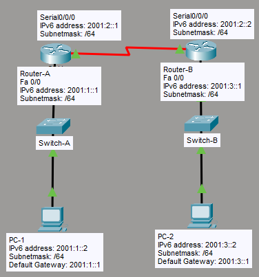

What I Learned
EIGRPv6 is the IPv6 version of EIGRP. It uses the same DUAL algorithm, same composite metric (bandwidth + delay), and the same successor/feasible successor logic — but the configuration is interface-based, not network-based.
The biggest difference from EIGRPv4: auto-summary is not available in EIGRPv6. IPv6 uses classless addressing by design, so summarization must always be done manually. Also — like OSPFv3 — EIGRPv6 requires a manually configured Router ID in a pure IPv6 environment.
EIGRP vs EIGRPv6
EIGRPv6 keeps the core EIGRP engine but updates addressing and removes features that don't apply in IPv6.
| Feature | EIGRP (IPv4) | EIGRPv6 (IPv6) |
|---|---|---|
| Protocol Header | 88 | 88 (same) |
| Auto-Summary | Possible | Unavailable |
| Multicast Address | 224.0.0.10 |
FF02::10 |
| Router ID | Derived from IPv4 address | Must be set manually (32-bit IPv4 format) |
| Enabled per | Network (network command) |
Interface (ipv6 eigrp [asn] command) |
| Algorithm | DUAL | DUAL (same) |
| Metric components | Bandwidth, Delay, Reliability, Load, MTU | Same |
ipv6 summary-address eigrp on the interface if needed.
Multicast Address
EIGRPv6 uses a dedicated IPv6 multicast address for sending hello packets and routing updates between EIGRP neighbors.
FF02::10 — All EIGRP Routers
This is the IPv6 equivalent of 224.0.0.10 used in EIGRPv4. All EIGRPv6-enabled routers join this multicast group and listen for EIGRP hello and update packets on their interfaces.
FE80::/10) as the source address for all EIGRP packets. Neighbor relationships are established using link-local addresses, not global unicast addresses.
My Lab Topology
The lab uses two routers (RA and RB) connected via a serial link, each with a FastEthernet LAN interface. The same commands apply to both routers — only the Router ID and interface addresses differ.

| Device | Interface | IPv6 Address |
|---|---|---|
| Router A | Fa0 | 2001:1::1/64 |
| Router A | S0 | 2001:2::1/64 |
| Router B | S0 | 2001:2::2/64 |
| Router B | Fa0 | 2001:3::1/64 |
Download my Packet Tracer lab:
Download Lab FileConfiguration
RA & RB — EIGRPv6 Configuration
enable
config t
! Step 1 — Enable IPv6 routing (mandatory before any IPv6 routing protocol)
ipv6 unicast-routing
! Step 2 — Create EIGRP process and bring it up
! 'no shutdown' is required — EIGRPv6 process starts in shutdown state
ipv6 router eigrp 10
no shutdown
router-id 10.10.10.10
exit
! Step 3 — Enable EIGRPv6 on FastEthernet interface
interface fa0
ipv6 eigrp 10
exit
! Step 4 — Enable EIGRPv6 on Serial interface
interface s0
ipv6 eigrp 10
exit- The EIGRP process starts in shutdown state by default — you must run
no shutdowninside the EIGRP process - The Router ID must be set manually — without a 32-bit Router ID, EIGRPv6 will not form neighbor adjacencies
Side-by-Side: EIGRPv4 vs EIGRPv6 Commands
| Task | EIGRPv4 (IPv4) | EIGRPv6 (IPv6) |
|---|---|---|
| Enable routing | — | ipv6 unicast-routing |
| Create process | router eigrp 10 |
ipv6 router eigrp 10 |
| Start process | Auto-started | no shutdown (required) |
| Router ID | Auto (from IPv4 address) | router-id 10.10.10.10 (required) |
| Advertise network | network x.x.x.x |
ipv6 eigrp 10 on the interface |
| Auto-summary | no auto-summary |
Unavailable (removed) |
Verification
! View IPv6 routing table — look for 'D' entries (EIGRP learned routes)
show ipv6 route
! View EIGRP neighbor table — confirm neighbor adjacencies via link-local addresses
show ipv6 eigrp neighbors
! View EIGRP topology table — see successors and feasible successors
show ipv6 eigrp topologyshow ipv6 route— remote networks should appear with prefix D (EIGRP)show ipv6 eigrp neighbors— neighbors listed with their link-local address (FE80::...)show ipv6 eigrp topology— each destination shows Successor (best path) and Feasible Successor (backup path)
All IPv6 Routing Protocols — Quick Reference
Here's how all three IPv6 dynamic routing protocols compare side by side:
| Feature | RIPng | OSPFv3 | EIGRPv6 |
|---|---|---|---|
| Type | Distance Vector | Link State | Hybrid (DUAL) |
| UDP/Protocol | UDP 521 | Protocol 89 | Protocol 88 |
| Multicast | FF02::9 |
FF02::5 / FF02::6 |
FF02::10 |
| Router ID | Not required | Required (manual) | Required (manual) |
| Auto-Summary | Unavailable | Unavailable | Unavailable |
| Enabled per | Interface | Interface | Interface |
| Process startup | Auto | Auto | Requires no shutdown |
| Metric | Hop count (max 15) | Cost (bandwidth) | Composite (BW + Delay) |
Key Takeaways
What I Understood
- EIGRPv6 uses the same protocol number (88) and DUAL algorithm as EIGRPv4
- EIGRP is enabled per interface in EIGRPv6 — there is no
networkcommand - The EIGRP process starts in shutdown state — always run
no shutdowninside the process - The Router ID must be set manually in a pure IPv6 environment
- Auto-summary is gone — IPv6 is classless by design; all summarization is manual
- EIGRPv6 uses
FF02::10as its multicast address (IPv4 equivalent:224.0.0.10) - Neighbor adjacencies use link-local addresses — verify with
show ipv6 eigrp neighbors - Routes learned via EIGRPv6 appear as D in the IPv6 routing table